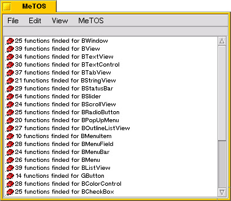
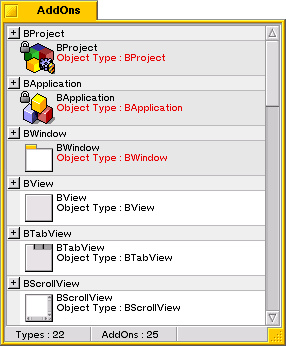
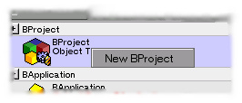
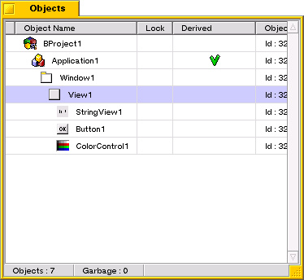
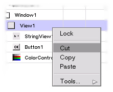
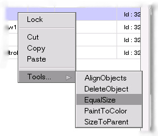
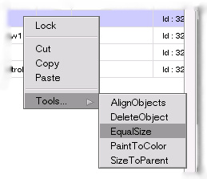
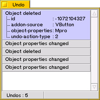

Comment utiliser MeTOS...
Quand l'application demarre, vous pouvez voir 6 fenetres :
- la fenetre MeTOS
- la fenetre AddOns
- la fenetre Objets
- la fenetre Proprietes
- la fenetre Outils
- la fenetre Undo
La fenetre MeTOS est utiliser pour acceder au menu et voir les informations sur l'utilisation de MeTOS,
debbug et informations.

La fenetre des Addons regroupe les objets que vous pouvez creer.
Vous trouvez ici, la BApplication, la BWindow et bien d'autres.

Pour creer un objet, il suffit de Glisser-Deposer un Addon dans la fenetre des Objets,
ou utiliser le bouton droit de la souris pour afficher le menu pop-up en utilisant le menu Nouveau.

La fenetres des Objets vous montre les objets de votre projet actuel.

Dans cette fenetres vous avez les informations sur :
- l'Icon et le nom de l'objet
- l'etat de verouillage de l'objet (verouiller permet de protegere un objet)
- la valeur derive (dervie veut dire que du code source et en-tete sera genere)
- l'ID de l'objet
- le nombre dobjet creer
- le nombre d'objet dans le cache (les objets effaces)
Vous visualiser l'objet selectionne dans la liste.
Vous pouvez selectionner un objet par simple clique dans cette liste.
Dans cette fenetre vous avez acces au menu pop-up de l'Objet (le menu est aussi disponible sur l'objet lui-meme)
pour afficher ce menu il suffit de cliquer avec le bouton droit de la souris.

La fenetre des Proprietes vous permets de modifier les proprietes de l'objet courant (selectionne).

Cela inclus :
- toutes les proprietes qui sont editable ou visibles (certaines proprietes internes sont invisibles)
- selectionner les fonctions a generer dans le code
- le code a ajouter pour un objet (code ajouter a la generation)
- les dependances a des libraires ou autre pour les elements qui ne seraient pas de l'API de BeOS
- L'information sur un objet
Pour editer une proprietes, il suffit de cliquer dessus et de changer sa valeur, le mode d'edition depend de la propriete,
vous pourez avoir des zones d'editions, des radio-boutons etc...
La fenetre Outils contient :
- l'outils d'alignement d'objets par rapport aux autres (selectionnees)
- L'effacement d'objets
- L'egalisation de taille entre objet
- Colorer un objet
- Redimentionner a la taille du parent
Vous pouvez acceder aux parametres d'un outil, par un clique droit sur ce dernier.
L'acces au outil est aussi possible par le menu des objets.
 

La fenetre Undo est utilisee pour annuler des actions (effacer, changement de proprietes...)

Pour utiliser la fonction Undo, selectionner l'element dans la liste et utiliser l'option Restaurer du menu pop-up,
ceci par un simple clique droit sur l'element.

top
- CKJ - Vincent Cedric
Copyright (c) 2000-2004.